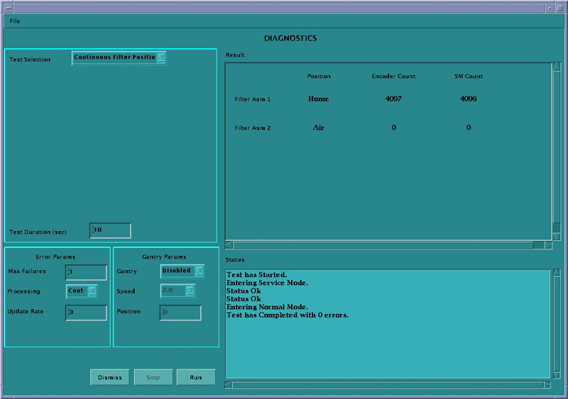

Operating Documentation
Direction 5307452-8EN, Rev# 4
Operating Documentation |
On the console select the [DIAGNOSTICS] tab in the Common Service Desktop.
Launch the [COLLIMATOR FUNCTIONAL] tool. Refer to Illustration 1 for the layout of the tool interface.
3. Select the functional test desired in the Test Selection drop-down box indicated in Illustration 1. The different tools are described in the following sections.
This test positions the Cams and filter to the selected positions for the entered test duration. Refer to Illustration 1for the layout of the tool interface.
The test runs in continuous modes which help detect intermittent operating conditions.
The test provides a means to visually validate the aperture and filter positions
This test can be used to confirm the functional operation of the collimator.
Look for highlighted fields that indicate the cam or filter did not make it to position.
Check the log for additional information when this occurs.
Watch for finger pinch hazards.
Attempt to move the filter and/or cams, when test is complete, and verify motor has holding torque.
This test moves the filter from one extreme to another for the entered test duration. Refer to Illustration 2 for the layout of the tool interface.
Illustration 2: Collimator Functional Continuous Filter Position Test GUI

This test will verify that no mechanical binding is present.
The manual mode can be used for signal tracing.
You check for motion when errors indicate no motion sensed.
If the display does not indicate changes in the encoder count, visually check the filter for motion:
If filter is moving, failure is in the encode circuit
If filter is not moving, failure is in the drive circuit.
Watch for finger pinch hazards.
The filter drive can be divided into two functions as shown in Illustration 3
This test reads and displays the CAM and filter encoder counts while the devices are positioned by hand. Refer to Illustration 4 for the layout of the tool interface.
When (to use)
What (to look for)
Notes
This test moves the selected CAM for the entered test duration. Refer to Illustration 5 for the layout of the tool interface.
Illustration 5: Collimator Functional Continuous CAM Rotation GUI

This test can verify that no mechanical binding is present.
The manual mode can be used for signal tracing.
If the display does not indicate changes in the encoder count, visually check the CAM for motion.
Listen for mechanical vibration or binding.
Watch for finger pinch hazards.
CAM A and B circuitry is the same.
CAM operation can be divided into two functions as shown in Illustration 6: